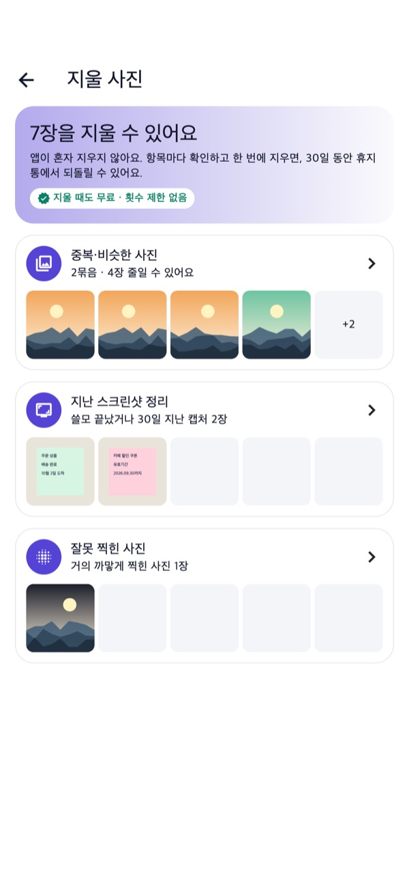

중복 사진 삭제하는 방법
1. 지울 사진은 이렇게 모여요
"사진" 탭 맨 위의 "지울 사진" 카드에서 정리할 사진을 세 가지로 모아 보여 줍니다. 지울 때도 무료이고 횟수 제한이 없습니다.
- 중복·비슷한 사진: 똑같은 사진이나 연달아 찍은 비슷한 사진
- 지난 스크린샷: 30일이 지난 캡처. 영수증·계좌·비밀번호가 보이는 캡처는 미리 고르지 않습니다.
- 잘못 찍힌 사진: 거의 까맣게 찍힌 사진

2. 이렇게 지우세요
앱이 혼자 지우지 않습니다. 항목마다 확인하고 한 번에 지웁니다.
- "사진" 탭에서 "지울 사진" 카드의 "정리하기"를 누르세요.
- 세 가지 중 하나를 누르세요. 묶음마다 가장 좋은 한 장은 남겨 두고 나머지를 미리 골라 놨습니다.
- 사진을 누르면 크게 볼 수 있고, 남길 사진을 바꿀 수 있습니다.
- 확인한 뒤 "○장 지우기"를 누르세요.
3. 실수로 지워도 괜찮아요
지운 사진은 휴대폰의 "최근 삭제된 항목"에서 30일 동안 되살릴 수 있습니다. 되살릴 수 없는 휴대폰에서는 지우기 전에 앱이 미리 알려 줍니다.